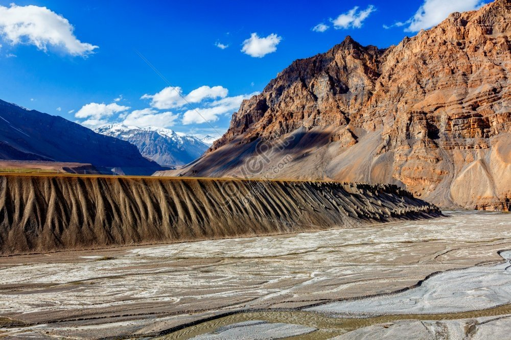
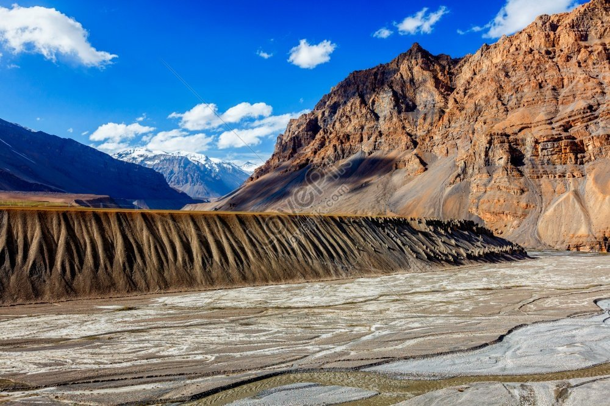

Highlights
- Key Monastery: A 1,000-year-old Tibetan Buddhist monastery perched on a hill, known for its breathtaking views and spiritual ambiance.
- Chandratal Lake: A crescent-shaped lake at high altitude, famed for its turquoise water, stunning reflections, and camping under starry skies.
- Pin Valley National Park: A unique cold desert biosphere with rare wildlife like the snow leopard, ibex, and Himalayan birds, perfect for trekking and nature photography.
- Komic Village: One of the world’s highest villages accessible by road, offering dramatic views of the Spiti landscape and housing the remote Komic Monastery.
- Tabo Monastery: A UNESCO-listed heritage site known for its ancient murals, stucco statues, and centuries-old Buddhist relics, often called the “Ajanta of the Himalayas.”
- Langza Village: Famous for fossil hunting, this village provides panoramic views of snow-capped mountains, including the stunning Chau Chau Kang Nilda peak.
- Dhankar Monastery and Fort: A cliff-top monastery with scenic views of the Spiti and Pin rivers’ confluence, offering hikes up to Dhankar Lake for serene solitude.


 



Spiti Kinnaur
Day 1: Shimla to Sangla (Kinnaur)
- Route: Shimla - Narkanda - Rampur - Sangla (around 7-8 hours)
- Highlights: Scenic drive through lush pine forests, Sutlej River views
- Activities: Relax in the Sangla Valley, explore the riverside
- Overnight: Stay in Sangla
Day 2: Sangla - Chitkul - Kalpa
- Highlights: Chitkul (the last inhabited village on the Indo-Tibetan border), views of Kinnaur Kailash mountain range
- Activities: Explore Chitkul village, riverside walk, photography; visit Kalpa’s local monastery and the famous Suicide Point
- Overnight: Stay in Kalpa
Day 3: Kalpa to Nako - Tabo
- Route: Kalpa - Puh - Nako - Tabo
- Highlights: Nako Lake, Nako Monastery, Tabo Monastery (a UNESCO World Heritage site)
- Activities: Walk around Nako Lake, visit Tabo Monastery with ancient murals and sculptures
- Overnight: Stay in Tabo
Day 4: Tabo - Dhankar - Kaza
- Highlights: Dhankar Monastery and Dhankar Lake; Kaza, the main town in Spiti
- Activities: Visit cliff-top Dhankar Monastery, trek to Dhankar Lake (optional); explore Kaza’s local market
- Overnight: Stay in Kaza
Day 5: Kaza - Key Monastery - Hikkim - Komic - Langza
- Highlights: Key Monastery, Hikkim (world’s highest post office), Komic (one of the highest villages), Langza Village
- Activities: Explore Key Monastery, send a postcard from Hikkim, and fossil hunting at Langza
- Overnight: Stay in Kaza
Day 6: Kaza to Kalpa
- Route: Kaza - Nako - Kalpa
- Highlights: Scenic drive back through the Spiti Valley, views of Sutlej and Spiti Rivers
- Activities: Leisurely day to enjoy mountain views and explore Kalpa village
- Overnight: Stay in Kalpa
Day 7: Kalpa to Shimla
- Route: Kalpa - Rampur - Shimla (around 8-9 hours)
- Drive back to Shimla for departure